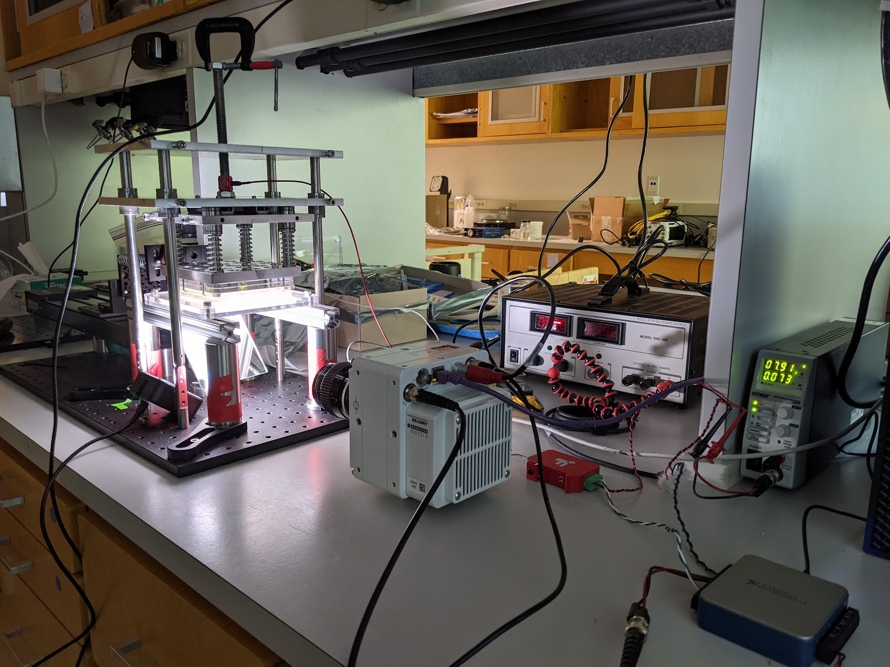
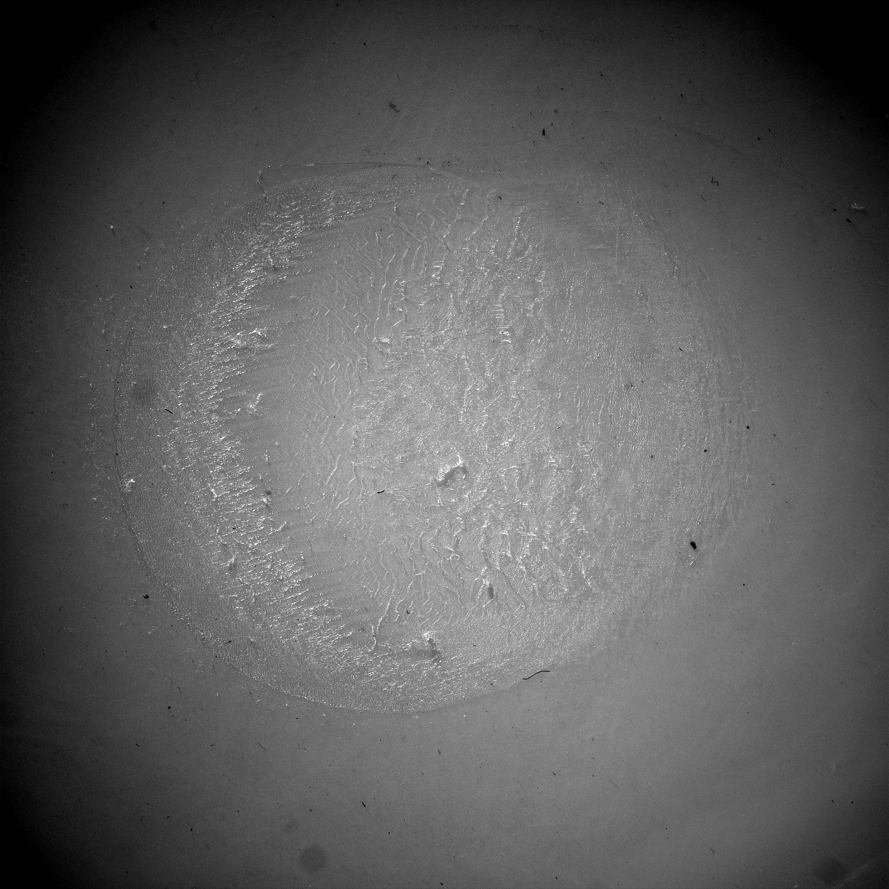
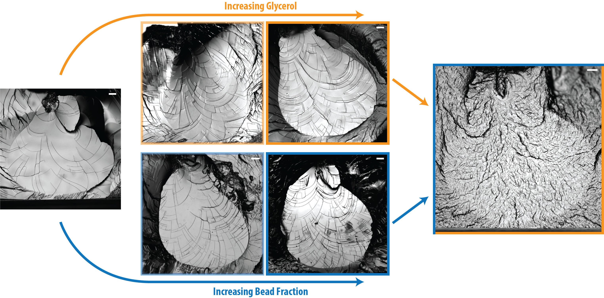
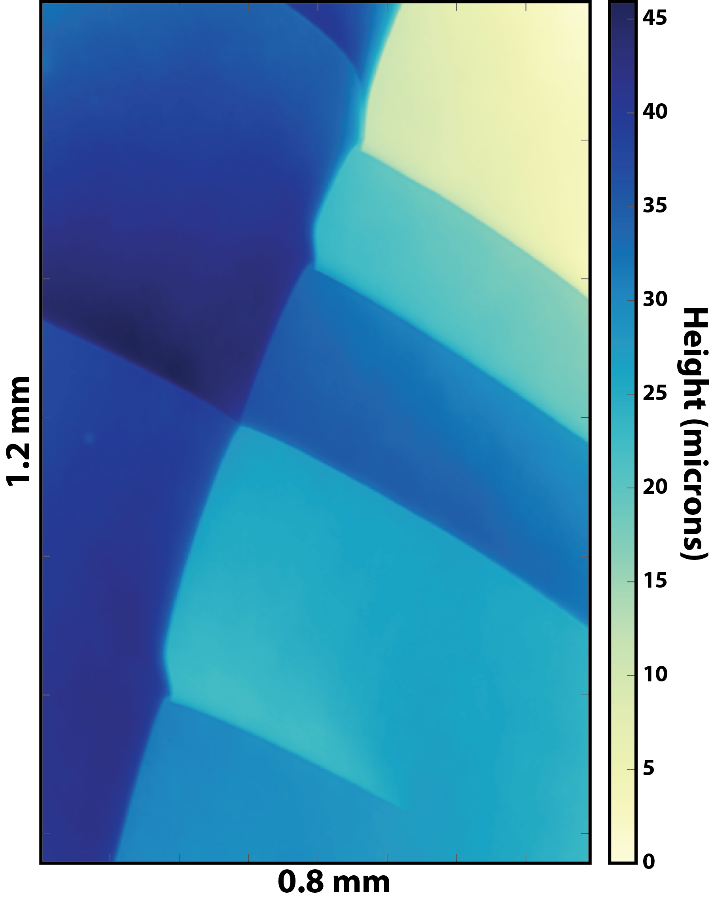

Research
Squishy Faults: A Scaled Laboratory System to Earthquakes
Earthquakes are hard to predict because: 1) their dynamics span enormous spatiotemporal scales (microns to km, milliseconds to centuries), 2) faults are highly heterogenous, and 3) they can only be observed indirectly. I have developed a fault made out of a transparent rubber that addresses each of these issues, allowing direct imaging of slip, active control over normal stress heterogeneity, and that can undergo earthquake cycles in just a few seconds. It also has slip events that are localized and do not fail the entire interface, meaning the stress state on the fault is a function of both its geometric heterogeneity AND the residual stresses left from past events. Due to this, the rubber fault follows a broad range of earthquake statistics seen in nature.
Using this system I have improved the interpretation of seismological stress drops, and observed and understood a precursory “locking” phase that precedes slip events on faults and has predictive power on future earthquakes.

Related publications
- Distinguishing Single and Linked Ruptures in the Laboratory and NatureGeophysical Research Letters, 2026
- Precursory Locking Precedes Slip Events on Laboratory FaultGeophysical Research Letters, 2025
- Seismological Stress Drops for Confined Ruptures Are Invariant to Normal StressGeophysical Research Letters, 2023
High-Speed 3D Dynamics of Rough Cracks
Fractures often have significant 3D roughness, but it is not well understood how that roughness forms and what its connection is to material heterogeneity. A huge reason for this is that it is very difficult to image 3D fractures, especially with enough temporal resolution to understand their behavior. I have developed a new system that combines laser sheet microscopy and fast camera photography to measure growing fractures at ~15 x 15 x 15 micron resolution at 1000 volumes per second. These movies show how step-like instabilities on the fracture front grow and interact to generate roughness. The complex three-dimensional dynamics of these interactions lead to mechanical and topological constraints on three-dimensional fracture mechanics.
Wear Mechanisms at High Strains
Elastomers and thermoplastics are commonly used in a number of applications involving high frictional stresses. This often leads to wear, which can fundamentally change the behavior, or destroy the functionality of the material. Different types of soft materials exhibit markedly different frictional behaviors. I created a high-speed contact imaging system to observe hemispheres of different materials as they skid, and measured their radically different dynamics to understand why thermoplastics behaved worse than rubber when used to make the treads of basketball shoes. Dissipating the frictional energy in these systems involves highly coupled thermal, elastic, plastic, and fracture-like responses, and as a result is, surprisingly, an excellent model system for understanding wear behaviors during earthquakes..

How Heterogeneity Makes Cracks Rougher
Fracture surface roughness is an important parameter that can control the energy dissipation of a crack and dictate the frictional, seismic, or fluid transport properties of a broken material. Thus, it is an important consideration for enhanced oil recovery and geothermal reservoir stimulation. A major source of fracture roughness is the interaction between a crack and material heterogeneity, but understanding this process was thought to be too difficult since it was believed that cracks are very sensitive to the details of this process and heterogeneity has historically been difficult to control experimentally.
I have developed two distinct methods to control heterogeneity in brittle hydrogels and have used them to show how the size and amount of heterogeneity affects fracture roughness, and how this can be easily predicted from simple statistical physics. In addition, I have shown that the system is actually insensitive to the details of this process and can be predicted from a single parameter. Furthermore, at very high heterogeneity I can generate hydrogel crack surfaces that resemble those seen in complex natural materials like rocks, indicating that all large-scale roughness we observe in nature could be built from this straightforward process we can now quantify and predict.

Related publications
- How Material Heterogeneity Creates Rough FracturesPhysical Review Letters, 2022 Cover article
The Rules of Fracture Roughness
Fracture roughness is not uniformly distributed across a surface, and instead is usually localized. For brittle fractures, this localized roughness comes in the form of step-like instabilities that drift laterally along the growing front and leave in their wake a linear scar of relief known as a step line. I have shown that these steps have a characteristic asymmetric shape that determines their motion and interactions and that there are only three unique types of interactions that steps can have. These interactions follow straightforward rules that, taken together, can be utilized to explain and predict large-scale complexity in fractures.

Related publications
- Geometric Rules for the Annihilation Dynamics of Step Lines on Fracture FrontsPhysical Review E, 2023